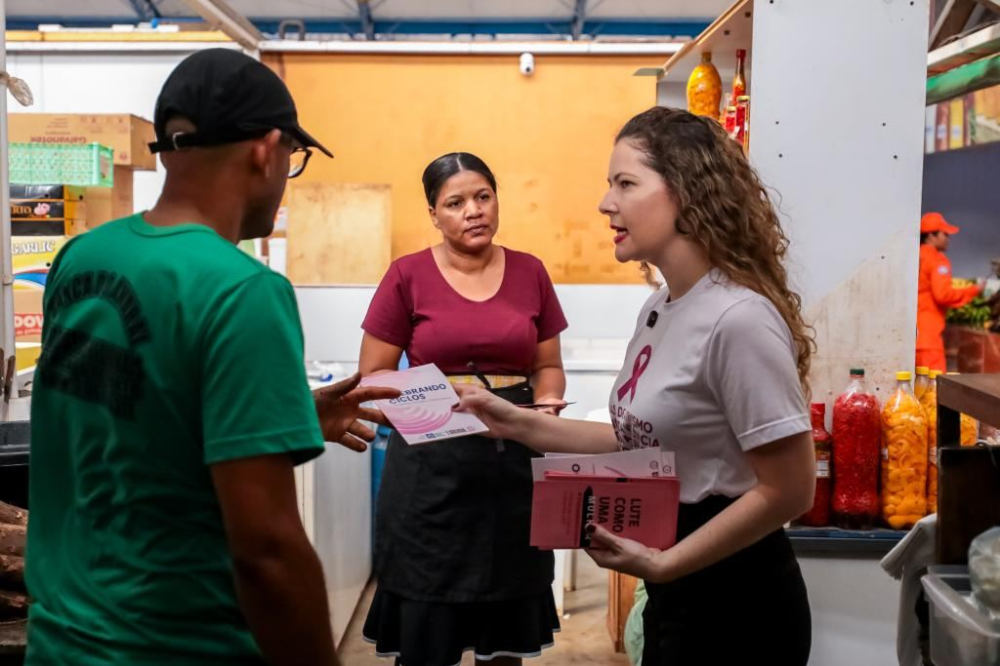

Campanha estadual pelo fim da violência contra a mulher mobiliza municípios com ações até 10 de dezembro
Abertura da mobilização reuniu 84 instituições na Feira do Porto, em Cuiabá; programação inclui palestras, blitz educativas e atendimentos

O Governo de Mato Grosso deu início, nesta quinta-feira (19.11), à campanha 21 Dias de Ativismo pelo Fim da Violência contra a Mulher. O lançamento aconteceu na Feira do Porto, em Cuiabá, e marcou o começo de uma mobilização que reúne 84 instituições.
Com o tema “Mato Grosso por Todas”, a mobilização prevê palestras, blitz educativas e atendimentos na capital e no interior, com a meta de alcançar 20 mil pessoas de forma presencial.
Coordenada pelo Gabinete de Enfrentamento à Violência contra a Mulher, a iniciativa vai além da conscientização: o foco é apresentar, na prática, como identificar os diferentes tipos de agressão, quais são os canais de denúncia e onde encontrar a rede de acolhimento.
A escolha da Feira do Porto, um dos pontos de maior circulação da capital, foi estratégica para facilitar a abordagem direta às pessoas.
“Escolhemos a Feira do Porto justamente porque é um local de comércio, que demonstra a força econômica do Estado, e onde podemos trocar informações com todas as pessoas.”
Mariell Antonini, chefe do Gabinete da Mulher
Ouvindo quem está na ponta
Durante a mobilização, equipes distribuíram panfletos e conversaram com comerciantes e frequentadores, com orientações sobre prevenção, denúncia e acesso à rede de proteção.
A iniciativa foi bem recebida. A atendente Suzimary Chaviere destacou a importância de conscientizar homens e mulheres e o comerciante Regis Souza destacou a prevenção. “Os homens também precisam estar conscientes das consequências da violência para a mulher, a família e ele mesmo”, disse.
O comerciante Antonio José da Silva reforçou que a informação é a principal ferramenta para mudar a cultura da sociedade e Claudia Maria chamou a atenção para a importância de denunciar situações de violência. “As mulheres precisam ter atitude e serem encorajadas a quebrarem o silêncio sem medo. Me sinto acolhida com mobilizações desse tipo”, comentou.
Rede integrada
O lançamento também reuniu representantes de instituições estaduais e municipais, do Poder Judiciário, do Ministério Público, das prefeituras de Cuiabá e Várzea Grande, da Polícia Militar, do Corpo de Bombeiros Militar, da Polícia Judiciária Civil e do Conselho Estadual dos Direitos da Mulher, além de organizações da sociedade civil.
A prefeita de Várzea Grande, Flávia Moretti, que acompanhou a abertura da campanha, destacou que informar é o primeiro passo para encorajar as denúncias. Ela citou o modelo de atendimento integrado mantido pelo município desde 2017, que cruza dados e serviços das pastas de assistência social, educação e saúde.
“Esse trabalho começa com a reflexão e o chamamento da população. É preciso despertar para a importância da denúncia e mostrar às mulheres e às famílias onde procurar ajuda”, pontuou a prefeita.
A presidente do Conselho Estadual dos Direitos da Mulher, Cenira Evangelista, completou reforçando que o poder público só consegue garantir direitos quando atua lado a lado com a sociedade civil organizada.
“É uma mobilização que une governo e sociedade civil para que cada instituição cumpra seu papel na garantia dos direitos das mulheres e no fortalecimento das redes de proteção.”
Cenira Evangelista, presidente do Conselho Estadual dos Direitos da Mulher
Programação
As atividades serão realizadas de 20 de novembro a 10 de dezembro, em 33 municípios, com palestras, rodas de conversa, caminhadas, blitz, panfletagens, atividades culturais e capacitações.
A programação também prevê atendimentos orientativos com a Van da Secretaria de Estado de Assistência Social (Setasc) e ações nos municípios do interior, com o objetivo de ampliar o acesso à informação e aproximar a população dos serviços de proteção.
Fonte: Maria Barbant | Secom-MT